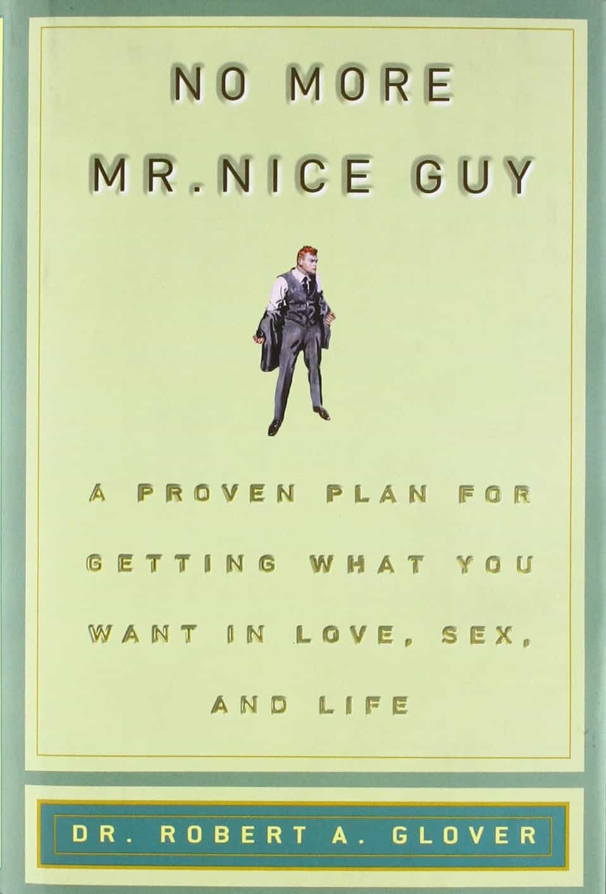
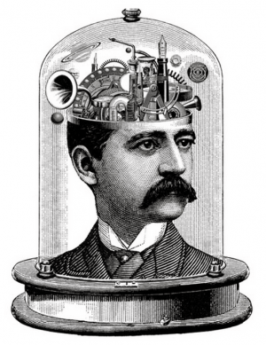
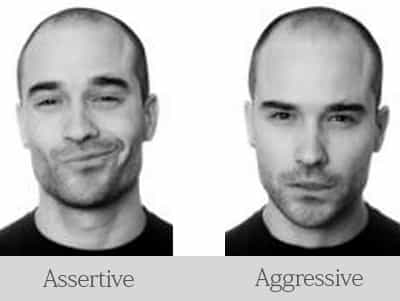
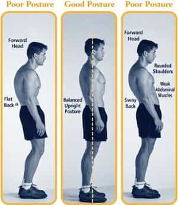

< < < Back
5 Proven Ways To Become More Assertive – Return Of Kings
Last week I went to dinner with my cousin and her friend who were visiting me for some days. They really enjoy Italian food so I booked a table in one of the most traditional Italian restaurants in town. The menu was kind of complicated because we had many options to choose from, so I asked the waiter to enlighten us a bit and suggest some of the most popular dishes.
While talking to the waiter, I noticed my cousin’s friend struggling to keep eye contact with him and also expediting signs of uncomfortable body language during his presence. I didn’t really pay much attention to his behavior and went on ordering some of the most interesting dishes in the menu.
When the dishes arrived, we had a variety of options to choose from. The friend looked really excited with the food choices and starting tasting every single dish to get an overall taste of our mini feast.
When he tried the penne al’arrabiata however, he noticed that the sauce was way too spicy. I am not really an expert when it comes to Italian food but, to his defense, I have to admit that the sauce was unusually spicy. Without hesitation, I called the waiter and politely asked him to change the dish and bring us something with a more balanced flavor.

To the sound of my comment, the friend blushed and in a moment of self-guilt, he urged me not to change anything and that the dish was fine. I obviously ignored him and asked him to relax, explaining that sometimes it is nice to get what you want.
The rest of the dinner flowed naturally and the friend eventually ended up loving the balanced taste of his new penne al’arrabiata.
Understanding Assertiveness
In order to understand this concept concretely I will quote a really nice paragraph I read in psychcentral on the topic:
Most people think of being assertive as an external thing, as facing up to difficulties with other people in a strong manner. The reality is that the problem goes deeper. To be assertive, we must first learn to face up to some core beliefs about ourselves. We need to see what we are doing to ourselves by being unassertive, and how this is affecting us.
In my opinion, unassertiveness is strongly associated with lack of self-esteem. When you see yourself as a person who lacks value, it is normal to assume that what other people think of you is more important than what you think of yourself.
When you don’t assume complete ownership of your own mental space, you automatically degrade your personal value and you let it get affected by the mental space of others.

Dr Robert Glover, in his bestselling book, “No More Mr. Nice Guy” refers to this as a doormat mentality where the unassertive person is trying too hard to please others while neglecting one’s own needs, thus causing unhappiness and resentfulness.
It is a mentality that not only affects the person himself but also causes frustration to others around him because his lack of proper need for communication is usually translated to neediness and approval seeking.
Understanding and eventually accepting this reality was a turning point for me and I truly believe it is the turning point for most people. It is crucial to recognize that we are all different and consequently most of us have different needs. And that is ok. Assertiveness is the ultimate tool to communicate those needs in an effective and elegant way.
Here are a few practical and useful ways that can help assertiveness become a strong part of your existential paradigm.
1. Embrace Assertiveness As A Mindset

It is crucial to understand that the first step to becoming more assertive, is to embrace assertiveness as a mindset. If you don’t understand the fundamental principles of assertiveness and how they can impact your life, you will end up trying to fake an assertive behavior and this will most certainly have a negative effect on you.
I can understand that a mentality shift is quite a tricky process but don’t undervalue the power of suggestion when it comes to imposing certain ideas and behaviors on your new self. Yes, it will take time and yes it will feel a bit awkward in the beginning but that’s ok. Embrace the process and you will start enjoying the benefits of assertiveness in no time.
2. Harness The Power Of Body Language
Assertiveness, like most of the behaviors associated with confidence and control, are principally demonstrated in a non-verbal way. As usual, the major ingredients of non-verbal assertiveness are eye contact, tonality and posture.
Eye contact
Keeping eye contact while communicating your need is crucial to eventually satisfying it because it demonstrates how serious you are about it. This is however a very elegant process and there is a thin line between creepiness and assertiveness when trying to do it right.
Micro expressions can easily betray your intentions and miscommunicate your message. A relaxed eye contact that sub communicates confidence and compassion, is usually a great way to go.

Tonality
Deep tonality is always important because it communicates dominant masculine polarity, but when it comes to assertiveness things are a bit different. Yes, deep tonality is still crucial but it also needs to be combined with the right amount of playfulness and sarcasm.
It goes without saying that the temptation of adopting a more aggressive tone will always be present. Managing to escape this point however, differentiates people who really understand assertiveness from those who don’t. Especially when it comes to male-female interactions, the right combination of all these elements is a huge attraction spike.
Posture
A great posture is a strong non-verbal indicator of confidence and dominance. Amy Cuddy in her famous TED Talk suggests that standing in a posture of confidence, even when we don’t feel confident, can affect testosterone and cortisol levels, and have an impact on how successfully we can communicate our message.

3. Stop Justifying Yourself
When it comes to assertiveness, justification is a weakness. Whether we like it or not, assertiveness is a notion strongly associated with the idea of power. Any behavior that attempts to jeopardize this idea will most probably lead to a false attempt to demonstrate an assertive behavior.
The more we familiarize ourselves with social interactions and behavioral dynamics, the more we come to understand that usually emotions and feelings triumph over logic and likewise, grandiosity over humility.
4. Pay Attention To Your Frame
Another crucial characteristic of an assertive character is the ability to understand and eventually hold an assertive frame. In a nutshell, your ability to hold, explain and support your frame can be considered as the foundation of an assertive character.
A great example of strong frame demonstration that signifies an assertive character is Russell Brand. Check out this video for more detail:
5. Carefully Manage Your Emotions
A common similarity noted among passive and aggressive men is that they both fail to understand others’ intentions. Aggressive men fail to understand the frame communicated by others, thus ending up exerting their will through physical, mental, and emotional force.
Passive men on the other hand, due to their inability to understand others’ views and opinions, constantly submit their will to the will of others. They try to please everyone in a very needy and sometimes creepy way that eventually makes both themselves and their surroundings miserable.
Drawing from the two extreme behaviors demonstrated by aggressive and passive men, we come to understand the importance and power of assertiveness. Assertive men embrace the balance between passivity and aggression but in an emotionally intelligent way.
They understand that although it is important to care for others, firstly you cannot please everyone and secondly you cannot satisfy other people’s needs if your needs are already unsatisfied.
Conclusion
Before I conclude this article, I would like to remind you that obviously there are going to be times when assertiveness can’t really help you. Perhaps you are in the army and you need to just follow orders, perhaps you are in a very important meeting and you need to play it safe, or perhaps you are just too tired to argue.
Nevertheless, learning to communicate your needs, defending your frame and raising your opinion, will definitely make you a freer and more confident person. Always have in mind that assertiveness is a tool to help you have more control over your life.
There are things you can control and things you can’t control, but your life should definitely belong in the first category.
Read More: One Way To Defeat Your Social Anxiety


{kind=link}